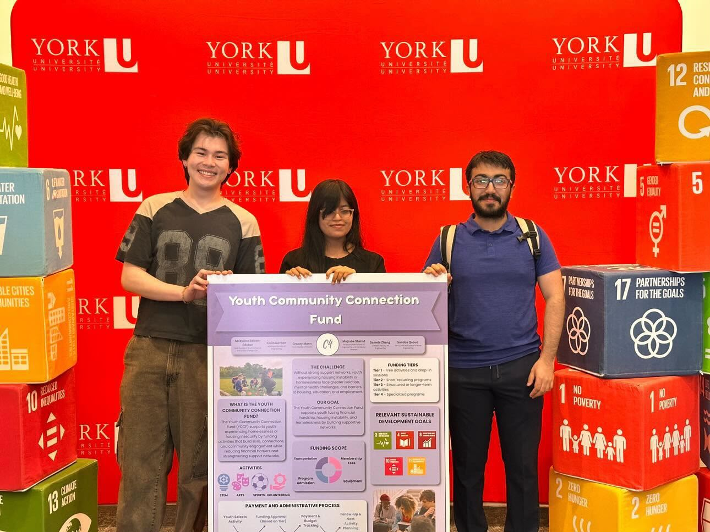

Youth Community Connection Fund (YCCF)
Hobbies shouldn't cost a youth their shot at belonging.

The Team
Advisory support from Housing, Infrastructure & Communities Canada (HICC), Youth Services Bureau Ottawa (YSB), Trek for Teens Foundation, BetterStreet, REENA, York University Mentors, and the C4 Community.
The Project
Team Members
Goals & Outcomes
Team C4 set out to address a gap that sits just outside what most homelessness support systems cover: access to community-based activities. Youth experiencing or at risk of homelessness often receive support for immediate needs — housing, food, healthcare — but remain cut off from the sports, arts, volunteering, recreation, and skill-building programs that build belonging, confidence, routine, and durable relationships. Without those connections, isolation compounds instability. The specific need identified through partner discussions and a site visit to YSB Ottawa was practical: youth-serving organizations consistently lack discretionary funding to cover registration fees, equipment, memberships, and transportation for community activities. The YCCF was designed to fill that gap — not by creating a new service organization, but by proposing a flexible funding initiative that could be hosted and operated by an existing youth-serving organization. The hoped-for outcome was a fundable, implementable model, supported by a pilot project plan, a provider directory, and youth-facing tools — practical enough for a partner to pick up and run.
Strategies & Processes
Team C4 used the SOUnD (Sustainable, Out-of-the-box, Universal Design) thinking framework alongside Five Whys analysis and three SPRINT boards to move from a broad concern about youth homelessness service gaps to a focused, practical model. The Five Whys process surfaced two root problems: a lack of community involvement and a lack of standardization. Partner feedback — particularly from the in-person YSB Ottawa visit — redirected the team away from standardization and toward community involvement as the core design priority. That pivot gave birth to the YCCF concept. Sprint planning divided work by task and strength: Colin Gordon led research, implementation plan writing, and partner coordination; Mujtaba Shahid built the YCCF website and handled budget and funding research; Gracey Mann developed the Activity Provider Approval Guidelines, the interest flowchart graphics, and the supplemental funding application; Abieyuwa Edison-Edebor conceptualized the initial YCCF objective and wrote the program model; Samele Zhang synthesized site visit notes; Sondos Qaoud handled proofreading, presentation formatting, and quality assurance. This role-based division allowed large parallel workstreams to run simultaneously on Day 3 — the sprint's most productive session — with all major deliverables completed on schedule. Evaluation criteria prioritized feasibility, inclusivity, and originality. Solutions were tested against partner feedback after every iteration, with the ethics of care framework guiding each design decision: when feedback revealed that a standardized rule approach ignored context, the team pivoted immediately to a more flexible, context-aware model.
Key Achievements
Team C4 produced a multi-component project package comprising: a detailed YCCF Implementation Plan covering the problem statement, evidence base, program model, tiered funding approach, staffing and roles, risk assessment and mitigation, participant experience storytelling, potential funding sources, and recommended next steps; an Ottawa-region Activity Provider Directory mapping 32+ activity providers across five categories (STEM, Arts, Sports and Recreation, Community Service, and Employment and Life Skills); a Youth Community Compass — a refined directory of free Ottawa activities for standalone community use; an Interest Flowchart to help youth navigate toward an activity that suits them; Activity Provider Approval Guidelines ensuring safe, inclusive, and accessible environments; a Supplemental Funding Application Form; and a YCCF website centralizing all resources. The team also explicitly designed contingency resources — the Community Compass and flowchart — to remain useful as standalone tools should the full YCCF pilot not be implemented.
Critical Evaluation
The YCCF's strongest design decision was its deliberate positioning as a supplement to existing organizations rather than a new standalone service. This significantly reduces implementation friction: no new infrastructure, no new organizational registration, no duplication of what YSB and similar organizations already do well. The tiered funding model was also a mature response to the discovery that activity costs vary widely — a flat fund would not have served youth accessing expensive STEM programs and youth accessing free community sports equitably. The project's honest limitation is that the YCCF was not implemented during the course — it remains a proposal and a plan. The team acknowledged growing uncertainty about real-world impact as the project progressed, which is what drove the development of the Community Compass and flowchart as tangible fallback deliverables. Long-term, the fund depends on grants, donations, or institutional partnerships that were not secured. The equity dimension of the model also deserves more scrutiny: the provider approval guidelines address safety and inclusion, but the model relies on youth navigating an application process — a potential barrier for youth with the lowest capacity to self-advocate.
Recommendations
The team's primary recommendation is for a youth-serving organization — YSB being the most natural first candidate — to pilot the YCCF using the implementation plan as a blueprint. The pilot should begin small and locally, with a defined cohort size, a clear budget ceiling, and a designated staff owner for administration. Feedback from that pilot should drive iteration on the funding tiers, application process, and provider vetting criteria before any wider rollout. Beyond the pilot, the team recommends expanding the provider directory beyond Ottawa as the model scales, building multilingual and accessibility-adapted versions of the youth-facing tools, and pursuing funding through Reaching Home, Ontario Trillium Foundation, and municipal recreation grants as primary channels. The Community Compass should be maintained as a living resource by the hosting organization, with quarterly reviews to keep provider listings current.
The Journey
Target SDG Goals
Starting Point
Team C4's starting point was a broad concern about youth homelessness service gaps. Early Five Whys analysis identified two parallel root causes: a lack of community involvement and a lack of standardization. Initial solution ideas included a standardized exit strategy for youth transitioning out of homelessness services and a housing-plus-employment pathway — both of which the team ultimately set aside as too complex and too dependent on multi-system coordination to be feasible within the course timeline.
Major Developments
The decisive turning point was the in-person visit to YSB Ottawa. Seeing the shelter and drop-in environment directly, and hearing from YSB staff that discretionary funding for community-building activities was a concrete, unmet need, shifted the team's direction completely. A general community connection fund concept became the YCCF — Youth Community Connection Fund — when the team narrowed its focus specifically to youth. Partner feedback during a subsequent session reinforced that a context-aware, flexible model was preferable to a standardized one, which resolved the team's earlier tension between their two identified root causes in favor of community involvement. As the implementation plan developed and the team's uncertainty over real-world impact grew, the project expanded to include the Community Compass and Interest Flowchart — standalone deliverables that would remain useful to youth even if the broader YCCF pilot was not realized. This hedging strategy was both pragmatic and honest about the limits of what a student project can guarantee.
Challenges
The most persistent challenge was the gap between what the team wanted to build and what was feasible to launch within the course. Directly funding activities, securing institutional commitments, and building a new service system were all outside reach. The team had to repeatedly redirect their energy from execution toward planning and documentation — designing something a future partner could implement rather than implementing it themselves. This required an ongoing discipline to stay focused on what was achievable rather than what was ideal. Identifying a geographic focus was also a practical roadblock resolved only by the YSB Ottawa site visit — without that anchor, the activity provider directory could not have been built. And while the team divided roles effectively, the contribution levels documented in the Process of Completion section reveal an uneven workload distribution across the six members, with Colin Gordon and Mujtaba Shahid carrying the bulk of research, writing, and technical development.
Lessons Learned
The team's most important lesson was about the relationship between ambition and feasibility in a two-week sprint: the strongest contribution a student project can make is a plan clear enough for a third party to implement, not a partially built system that stalls without the student team's continued involvement. The YCCF implementation plan was designed with this in mind, and the Community Compass was added as insurance. The team would also resolve the community involvement vs. standardization tension earlier — the pivot came after partner feedback rather than before, which cost time. More direct conversations with community partners in the first session, specifically asking "what is your most immediate unmet need?", would have surfaced the discretionary funding gap sooner and allowed more time for implementation plan depth and direct user-facing tool development.
Future Direction + Continuation Feasibility
Continuation is feasible, and the YCCF is explicitly designed for it. The implementation plan, provider directory, application form, and website are all built to be handed off to a partner organization without requiring the student team's continued involvement. YSB Ottawa is the most natural pilot host given the existing relationship and the site visit that inspired the project. A small pilot — covering a defined cohort of youth over a six-to-twelve month period — would test whether the tiered funding model, provider approval process, and application system work in practice, and generate the outcome data needed to attract sustained funding. The framework's geographic flexibility — the pilot focuses on Ottawa but the model is designed to be replicable in any municipality with local activity providers — is a meaningful continuation asset. Once a pilot demonstrates proof of concept, the model could be adapted for other C4 partner cities and organizations without rebuilding from scratch.
Responsible Interest Holders
YSB Ottawa is the primary interest holder and the recommended first pilot host. BetterStreet, Trek for Teens, and REENA — all of whom engaged with the team — are additional candidates for future adoption. Activity providers across the five directory categories are essential operational partners: without their continued participation and updated information, the directory degrades quickly. Municipal recreation departments, community foundations (Ontario Trillium Foundation, Toronto Foundation), and federal programs such as Reaching Home are the most realistic funding sources for a sustained pilot. Post-secondary institutions with community service-learning programs could supply volunteer support for fund administration and outreach.
Barriers
Funding is the most immediate and most structural barrier. The YCCF depends on grants, donations, or organizational budget allocations — all of which require an institutional champion willing to write applications, manage relationships, and maintain the program over multiple funding cycles. Without that champion, the plan remains a document. Staff capacity is the second barrier. Even with a detailed implementation plan, administering a fund — reviewing applications, vetting providers, processing disbursements, tracking outcomes — requires dedicated time from frontline or administrative staff who are already stretched. Without a clear staff ownership model and resource allocation, the fund risks falling into the same discretionary funding vacuum it was designed to fill. The application process itself may create access barriers for the youth most in need. Youth with limited literacy, no fixed address for correspondence, or distrust of formal processes may not engage with a fund that requires them to apply. Future iterations should explore whether a staff-facilitated enrollment model — where a case worker or shelter staff member initiates the application on behalf of a youth — could reduce this friction without removing youth agency.